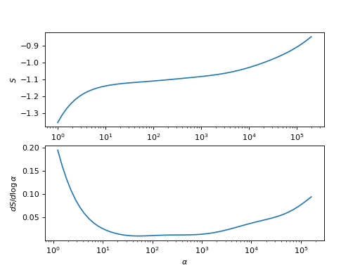

triqs_maxent.analyzers.entropy_analyzer.EntropyAnalyzer
- class triqs_maxent.analyzers.entropy_analyzer.EntropyAnalyzer(name=None)[source]
Analyzer searching a flat feature in the entropy
This analyzer chooses the spectrum \(A_\alpha(\omega)\) where the derivative of the entropy with respect to \(\log\alpha\) is minimal.
import matplotlib.pyplot as plt import numpy as np S = [-0.8456575058822821, -0.8658403520963711, -0.8844467584579873, -0.9015179804032627, -0.917151672328798, -0.9314863556664439, -0.944683164425082, -0.956907556102252, -0.9683133476777639, -0.9790307680896819, -0.9891593596567183, -0.9987657170111451, -1.0078854019950367, -1.0165280011549969, -1.024684177382945, -1.0323336228063789, -1.0394529560517198, -1.0460227711524488, -1.0520332288852523, -1.057487795325951, -1.062404977107112, -1.0668181517074484, -1.070773798901126, -1.0743285656102701, -1.0775456259846594, -1.08049074893449, -1.0832283965498788, -1.0858180930339953, -1.0883112550281395, -1.0907486650570901, -1.0931587807617578, -1.095557070693374, -1.0979465250594018, -1.1003193968995932, -1.1026600976500056, -1.1049490343932176, -1.1071670792456967, -1.1093003459253266, -1.111345024505977, -1.1133121363430305, -1.1152320138828, -1.1171577437178764, -1.1191656036718212, -1.1213502283233436, -1.1238160022650803, -1.1266718510795215, -1.1300348922182275, -1.1340406305366701, -1.1388547911555023, -1.1446847433171343, -1.1517907169027382, -1.1604971815494127, -1.1712045022410134, -1.1844004970446838, -1.2006707511139032, -1.220706440371579, -1.2453068384914605, -1.2753730596069384, -1.311887106342708, -1.355868667039715] S = np.array(S) alpha = np.logspace(0, np.log10(2.e5) , len(S))[::-1] plt.subplot(2,1,1) plt.semilogx(alpha, S) plt.xlabel(r'$\alpha$') plt.ylabel(r'$S$') plt.subplot(2,1,2) deriv = np.full(len(alpha), np.nan) deriv[1:-1] = ((S[2:] - S[:-2]) / ( np.log(alpha[2:]) - np.log(alpha[:-2]))) plt.semilogx(alpha, deriv) plt.xlabel(r'$\alpha$') plt.ylabel(r'$dS/d\log\alpha$')
 - Parameters:
name : str
the name of the method, defaults to EntropyAnalyzer.
- Attributes:
A_out : array (vector)
the output, i.e. the one true spectrum
alpha_index : int
the index of the output in the
A_valuesarraydS_dalpha : array
the derivative of the entropy with respect to \(\\log\\alpha\)
info : str
some information about what the analyzer did
Methods
|
|
|
Perform the analysis |